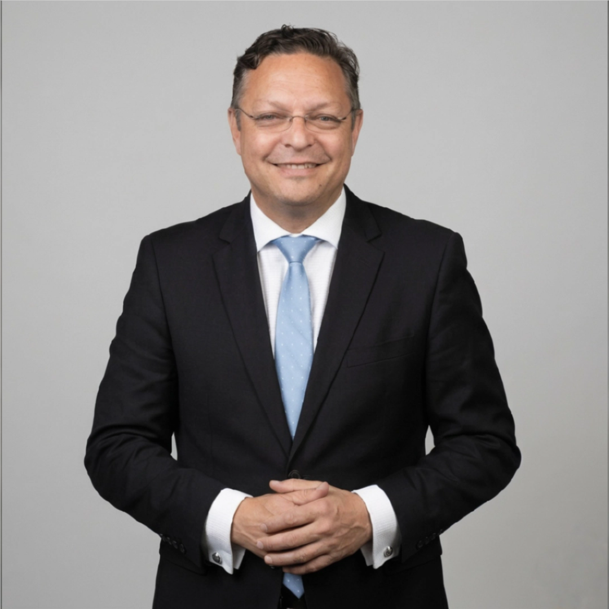
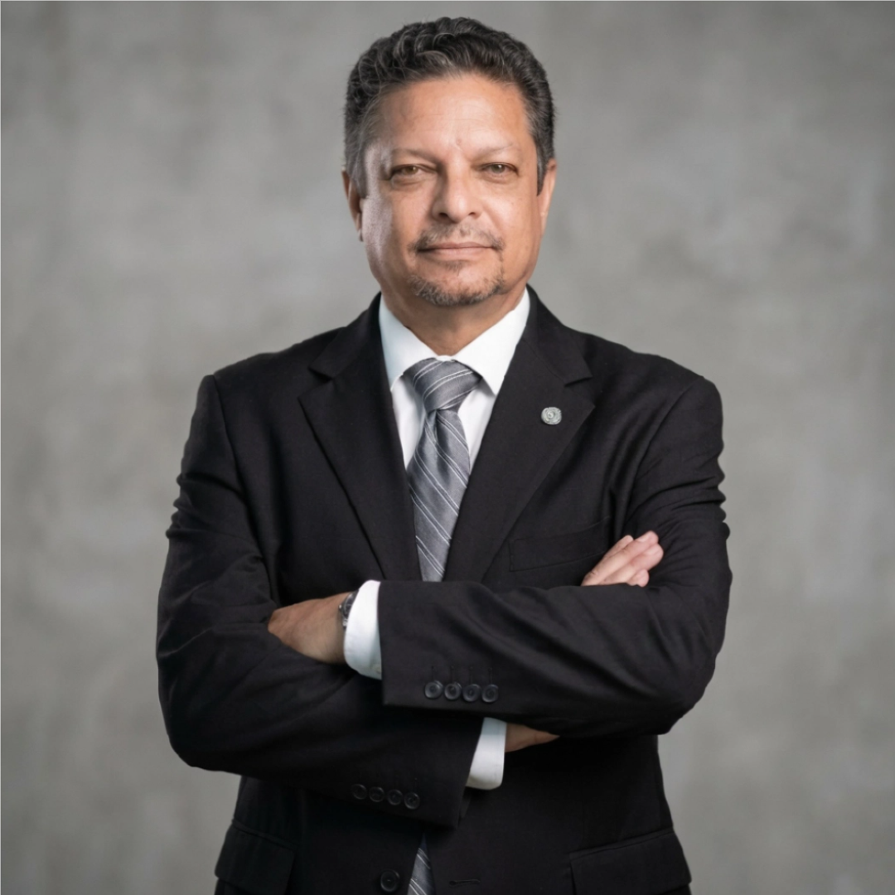

Legal & Court Interpretation
Court hearings, arbitration panels, depositions, and sworn proceedings — in Panama, the United States, and internationally.

Certified Public Interpreter · Panama City, Panama
Conference Interpreter & Certified Court Interpreter
Senior conference and court interpreter based in Panama, trusted for legal, maritime, governmental, and international assignments since 1980.
Miguel Ángel Urrutia is a Certified Public Interpreter based in Panama City, with a continuous professional record in legal, maritime, governmental, and conference interpretation since 1980.
Recognized by the Ministry of Government and Justice of the Republic of Panama (Resolution No. 290), he holds an A-level designation in Spanish and English per AIIC standards, with working knowledge of French and Portuguese. He is also a Licensed Seafarer under the Panama Maritime Authority.
He has served as lead interpreter for international conferences, arbitration hearings, and Board of Directors proceedings, and has coordinated interpreting teams for the World Bank Group and the Japan International Cooperation Agency.
Court hearings, arbitration panels, depositions, and sworn proceedings — in Panama, the United States, and internationally.
Panama Canal Commission and Authority proceedings, maritime arbitration, port congresses, nuclear transport briefings, and engineering conferences.
Training programs for ICITAP, INTERPOL, ILEA, the U.S. Southern Command, the Royal Canadian Mounted Police, and the National Crime Agency (UK).
Diplomatic negotiations, OAS sessions, the World Economic Forum Latin America, and the FTAA/ALCA international trade negotiations process.
Major pharmaceutical symposia (Abbott, Merck, Roche, GSK, Bayer, Sanofi, BMS, Janssen), hospital equipment seminars, and engineering congresses including PIANC and AIRBUS.
LatAm Banking Federation, IMF and World Bank briefings, KPMG, PwC, BDO, and Grant Thornton tax law seminars, and ECLAC economic commission sessions.
Over 18 years of remote simultaneous, hybrid, and fully decentralized conference interpretation, including live international television and certified RSI platforms.
Began professional interpreting career at the United States Embassy in Panama, serving the Commercial Section and establishing a foundation in high-stakes bilateral interpretation.
Latin America and Caribbean monitor for the Foreign Broadcast Information Service, a U.S. State Department information monitoring unit handling sensitive regional reporting.
Granted official certification as Certified Public Interpreter (Spanish/English) by the Ministry of Government and Justice of the Republic of Panama, Resolution No. 290.
Lead interpreter for the Language Services Branch. Covered arbitration hearings, accident investigations, Board of Directors meetings, and court interpretation for investigative proceedings — in-country and abroad.
Conference interpreter for the Free Trade Area of the Americas international trade negotiations among member states — authorized by a panel of AIIC senior interpreters and the FTAA Chief Interpreter.
Court interpretation for the Miami Maritime Arbitration Council, the U.S. Federal Court, and Panama Maritime Court. Conference interpretation for the World Bank, INTERPOL, the Royal Canadian Mounted Police, NCA (UK), the OAS, and leading industry congresses worldwide.
Live media interpretation for MEDCOM Panama: COP26 Conference of the Parties, multiple Academy Awards ceremonies, Miss Universe, and Miss World broadcasts.
Member of the Legal Affairs Committee of the Panamanian Association of Translators and Interpreters (APTI).
Over 18 years delivering interpretation in every remote and hybrid format — long before remote interpretation became standard practice in the profession.
On-site interpretation of telephone presentations from remote participants, into and from a second language.
Live interpretation of multi-speaker video sessions for centralized audiences across broadcast and enterprise platforms.
Fully remote delivery for centralized conferences — interpreter off-site, audience and speakers on location.
All participants remote — interpreting conferences where every attendee, speaker, and interpreter is in a separate location.

“A career built over decades of trust, precision, and discretion.”
From the commercial offices of the U.S. Embassy in 1980 to international maritime arbitration, live television interpretation, and fully remote simultaneous conferences — Miguel Ángel Urrutia has worked at the intersection of language, law, and commerce for over four decades.
His record reflects not only linguistic fluency, but the professional judgement, subject-matter depth, and personal discretion that sensitive international work demands. He has coordinated interpreting teams for the World Bank Group and the Japan International Cooperation Agency, completed AIIC professional development in 2023, and served institutions on five continents.
This is a career defined not by volume, but by the calibre of assignments, the trust of repeat clients, and an unbroken standard of quality since 1980.
Available for conference assignments, legal proceedings, remote interpretation, and team coordination — nationally and internationally.